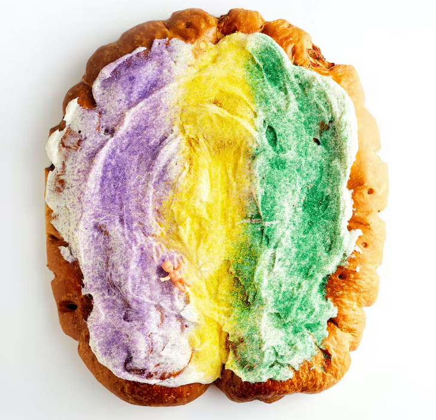
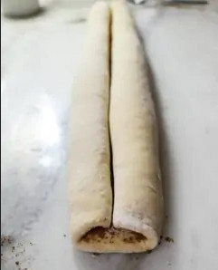
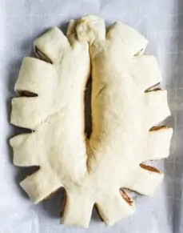

Coconut King Cake
Dough
- 3/4 cup warm coconut milk (100-110 Fº)
- 1/4 cup honey
- 1/4 tsp instant yeast (7 g)
- 4 large eggs, room temp
- 4 1/2 cups all-purpose flour (568 g)
- 2 tsp kosher salt
- 10 tbsp unsalted butter, softened to room temp, cut into 1-inch pieces (1 1/4 sticks)
Filling
- 1 cup dark or light brown sugar(110g)
- 1 tbsp ground cinnamon
- pinch of kosher salt
- 2 tbsp salted butter, melterd
- 2 tbsp coconut milk
Icing & Sprinkles
- 6 tbsp unsalted butter (3/4 stick)
- 4 oz cream cheese, softened to room temp (1/2 block)
- 2 cups confectioner’s sugar, packed
- 2 1/2 tsp coconut milk
- 1/4 cup coconut milk, for brushing on top after baking
- sanding sugar or sprinkles(purple, green, gold)
Directions
The Day Before – Mix the dough to rest overnight
- In a large glass measuring cup or bowl, pour in 3/4 cup coconut milk and microwave or heat to 100ª F – 110ªF (not any hotter or the yeast will die). To the same cup, add 1/4 cup honey and 2 1/4 tsp instant yeast, then whisk to combine. Let the mixture stand for 10 minutes until foamy. If it doesn’t foam, your yeast may have died, so start over with fresh yeast! When the mixture is foamy, add 4 room temp eggs then whisk to combine.
- In the bowl of a stand mixer with the paddle attachment, add 4 1/2 cups flour and 2 tsp kosher salt. Stir on low to combine. With the mixer on low speed, pour the milk/egg mixture into the flour and stir on low until combined. Add 10 tbsp softened butter one piece at a time. When the butter is all in, increase the speed to medium, and beat for 1 minute until the butter is fully incorporated and the dough is stringy, very stick and wet. Use a spatula to spoon the sticky dough into a large greased bowl. Cover bowl with plastic wrap and allow the dough to rest and rise for 30 minutes.
- After 30 minutes, apply the first fold by placing your fingers under one edge of the proofed dough, pulling the dough up, and folding it back over itself. Repeat this motion around the entire perimeter of the dough, turning the bowl as you go, until it’s completely folded over itself, about 6 times. Cover the bowl again and rise for another 30 minutes. Repeat this folding step 3 more times, waiting 30 minutes in between each fold, for a total of 2 hours and 4 folds. Cover the bowl, and refrigerate overnight or up to 72 hours. This resting time allows your dough to develop serious flavor!
- Use the downtime in between folds to brown the butter for the icing since it will need to solidify again. Melt 6 tbsp unsalted butter in a saucepan over medium heat until the butter gets a tint of brown, not too dark, about 10 minutes. It will smell nutty and delicious! Pour into a heat-safe bowl, and cover at room temp to solidify overnight on the counter.
The Day Of – Shape & Bake the King Cake
- Line a 18″ x 13″ baking sheet with parchment paper for easy cleanup. Set aside. In a small bowl, mix 1 cup brown sugar, 1 tbsp cinnamon, and a pinch of kosher salt. Set aside.
- Retrieve cold dough from the fridge. Punch down the cold dough to knock out the air and knead about 10 times just to wake up the yeast. On a floured work surface, roll out the dough into a 14-inch by 18-inch wide rectangle. Use a fork to poke holes every 2 inches or so throughout, then brush 2 tbsp coconut milk and 2 tbsp melted salted butter on top. Sprinkle cinnamon mixture evenly over the top, and press it in lightly with your hands to adhere to the butter and coconut milk.
- to roll, start with one of the long edges, and roll into a tight log and stop when you’ve reached the middle of the rectangle. Do the same on the other side to create two logs in a scroll shape.

- Carefully transfer the dough onto your lined baking sheet, seam side down. You can use a bench scraper or small cutting board to help with the transfer. Form the dough into a U-shape. If you’d like it to be a full oval, pinch the two ends together. Carefully stretch the thicker end of the U out so that it’s generally level with the other side. It’s okay if it’s not perfect; we’ll cover the cake in icing!
- Use a knife to cut 1.5-inch slits about 1.5 inches apart around the entire perimeter of the cake. Then cut a slit in the thickest part of the cake in the center (see photo). Cover loosely with plastic wrap and let the dough rise one last time in a warm spot until fully proofed, 1 to 1 1/2 hours. While the cake is proofing, mix the icing.

- In the bowl of a stand mixer with paddle attachment, add the solidified browned butter you made the night before and room temp cream cheese. Beat until combined. Add 2 cups confectioner’s sugar and 2 1/2 tsp coconut milk. Mix just until combined, we don’t want this to be super whipped. Add more powdered sugar or milk as needed for desired consistency. This icing is more like frosting, so the consistency will resemble a buttercream. Set aside. Preheat oven to 350º F (180º C).
- Bake the proofed king cake for 32-35 minutes, rotating the pan halfway through until light brown on top. When the cake is done and still warm, brush on 1/4 cup of coconut milk all over the cake. This keeps it soft and prevents the crust from hardening too much. (It feels wrong, but do it anyway!) It should absorb fully after 15 mins.
- When the cake is cooled completely, spread on the brown butter icing. Decorate with the purple, green, and gold sprinkles. Slice & enjoy!